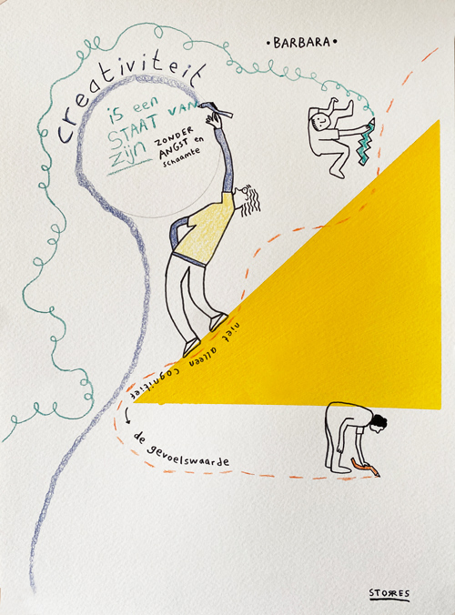

Anders kijken
Master Kunsteducatie – 2024
Kunst stelt je in staat om vanuit verschillende perspectieven te denken, te kijken en te verbeelden. De master Kunsteducatie heeft mij, als docent vormgeving in het hbo-onderwijs, de ruimte gegeven om een goed onderbouwde visie over kunsteducatie te kunnen ontwikkelen. De rode draad was voor mij ‘creativiteitsontwikkeling’ en de focus die ik ervaar op theoretische creativiteit in het hbo en het gemis van intuïtieve creativiteit.
Tijdens mijn literatuuronderzoek kwam ik erachter dat het hbo-onderwijs vooral een doelgerichte en functionele focus heeft en gericht is op het maken van producten (theoretische creativiteit) en dat kunsteducatie juist de kans biedt om op een andere manier naar creatief denken en uitdrukken te kijken. Deze creativiteit komt meer vanuit een belichaamd creatief proces waarbij zintuigen, emotie en gevoel betrokken zijn (intuïtieve creativiteit). Het intuïtieve creatieve proces heb ik in een empirisch onderzoek beter gekaderd en gedefinieerd. Middels een Art Based Learning heb ik vervolgens getest of studenten de waarde kunnen zien en benoemen, naast het theoretisch creatief proces.
Daarnaast heb ik in de rol van projectleider samen met mijn partner Susanne de Kraker het belichaamd leren verwerken in een project. Hierbij hebben we ons laten inspireren door de filosoof Bruno Latour en zijn visie op de relatie mens en natuur en hoe wij een meer wederkerige relatie zouden kunnen opbouwen. De combinatie van het thema ‘Natuur’ en een belichaamd creatief onderzoek heeft geleid tot een kunsteducatief project waarbij studenten onder leiding van een kunstenaar en ecoloog op zoek zijn gegaan naar een specifiek onderwerp, plek en vorm om uitdrukking middels een creatieve uiting – een kunstwerk – en deze terug te geven aan de natuur.
De master heeft mij de ervaring en het vertrouwen gegeven om nieuwe wegen in te slaan en ik ben super trots op mijn titel Master of Education. Alhoewel ik nog lang niet klaar ben met onderzoeken wat creativiteit is en wat het kan betekenen voor mijn hbo-studenten, ben ik wel een stuk sterker geworden in mijn visie over het belang van het ontwikkelen van een eigen creatief zelf.
